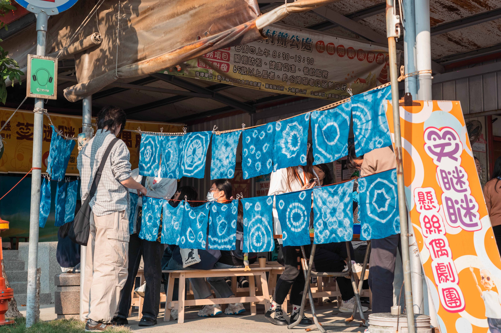

01
傳統技藝
黃憲章
國寶級懸絲偶技師 ｜ 立青工作室創辦人
「不能讓這條線，在我們這一代斷掉。只要架構在，就能一直延續。」
國寶級懸絲偶技師 ｜ 立青工作室創辦人
「不能讓這條線，在我們這一代斷掉。只要架構在，就能一直延續。」

02 地方創生拾間文化負責人 ｜ 朴子好書室創辦人
「壯遊不只是看風光旖旎，更要看見人間的艱難險阻。把老屋接回土地的過去與未來。」
糊紙工藝師 ｜ 無形文化資產保存者
「真正的推廣，是教到學生有一天做得比你還強。我玩的是真的，不是假的。」
走進六腳與朴子的街巷田野，我們持續記錄更多默默耕耘的在地匠人與生活者。